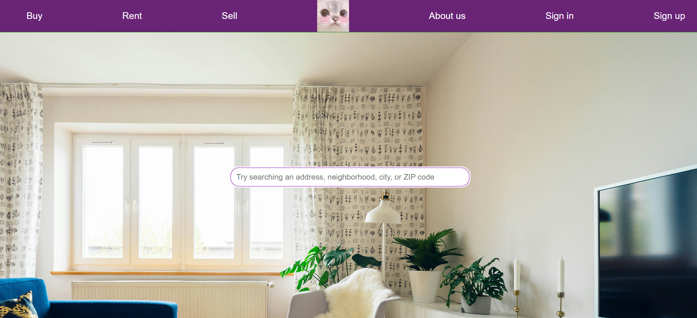
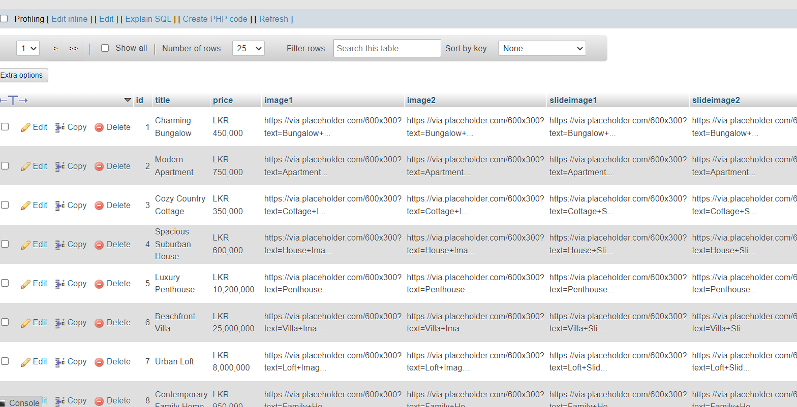
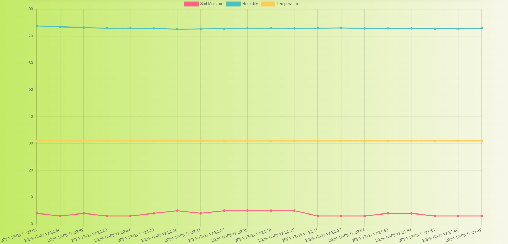
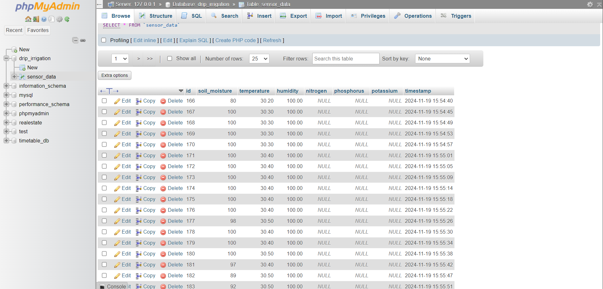

Property8 - Real Esate Website
SLidam - Real Estate Website is a comprehensive platform designed for property listings and searches, leveraging PHP and MySQL for robust backend functionality and database management. The backend is built with PHP, ensuring efficient server-side processing and dynamic content generation. MySQL is utilized for database integration, offering reliable data storage and retrieval for property listings and user information. The frontend is crafted using HTML and CSS, providing a responsive and visually appealing user interface. This project aims to simplify real estate transactions by offering a seamless and user-friendly experience.
 Plant Guardian - A Web Dashboard for IoT-based Drip Irrigation Systems
This project utilizes advanced JavaScript libraries like Chart.js to analyze and visually represent data, providing real-time insights into plant health and irrigation needs. Sensor measurements are retrieved from the backend, ensuring efficient water usage and optimal plant growth. By leveraging Flask, the project seamlessly integrates IoT functionalities to create a smart, responsive irrigation system. Explore the code to see how these technologies come together to enhance agricultural efficiency and sustainability.
 